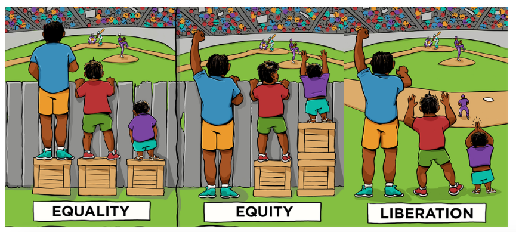
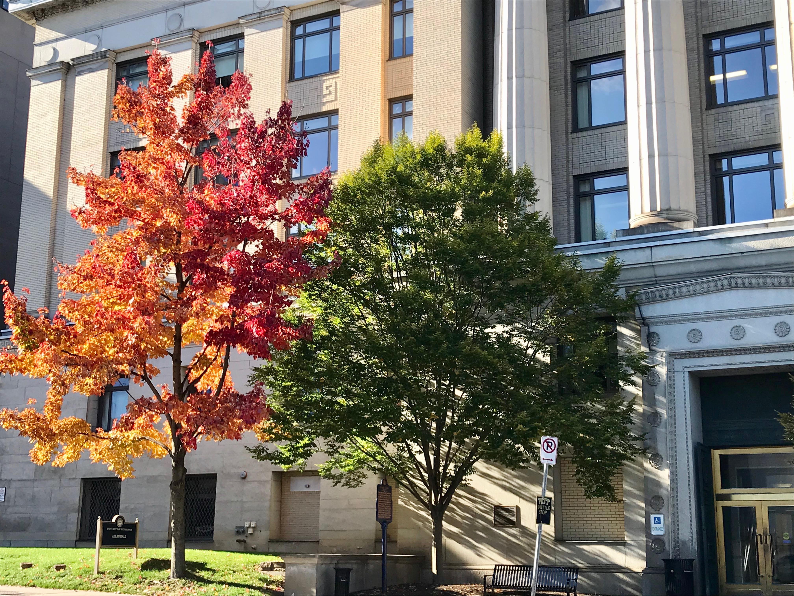

Conclusion: Making is Liberating
The entire process of exploring texts related to making, creating, and technology integration has been constructionist in nature. As I have encountered new writers, approaches to writing, and topics related to making, creating, and technology integration; I have made connections based on my past experience as a learner and educator. There have been times where I have needed to deconstruct my previous understandings before reconstructing something new. I have come to the conclusion that the process of making and creating has the power to liberate. While I have pushed for an equitable education for all students in my career as an educator, liberation breaks down the barriers that make equitable supports necessary in the first place.
Especially in the time of the COVID-19 pandemic, technology is a tool that can constrain or liberate education. While the pandemic has undoubtedly caused unimaginable harm and loss, it can also be an opportunity to rethink how we can liberate education from the confines of traditional schooling and epistemology that are often racist and sexist. It is time to move beyond seeking equality or even equity in education. All children deserve a liberatory education, and making is liberating.

Implications for Teacher Education
Inevitably, preservice and inservice teachers may not have experienced the kind of schooling and education that our children need. While some people get into teaching because they want to know and do better, many aspiring teachers loved school. It worked for them. Papert implores us to acknowledge that the traditional knowledge-set in K-12 schoos may be sufficient for some students, but it is "neither necessary or optimal." What does it take to shift the mindsets of aspiring teachers? Keengwe, Onchwari, and Wachira argue that teachers must experience technology integration themselves as students. The same is true for making and creating. As humans, we are wired to resist change. The discomfort that educators might experience in reimagining education in this way can lead to sustainable change in their practice. That change can be path changing for their students.
Next Steps
Further research on how children and adults construct aspects of their identities.
Define and measure various aspects of identity: maker, creative, computer science, coder, etc.
Research what infusing making and creating in teacher education programs can look like, and try it out in the science methods course this fall.


generated by the Pitt Fuego
“Why make a spark when you can light a fire?
Adapted from S.J. Quigley